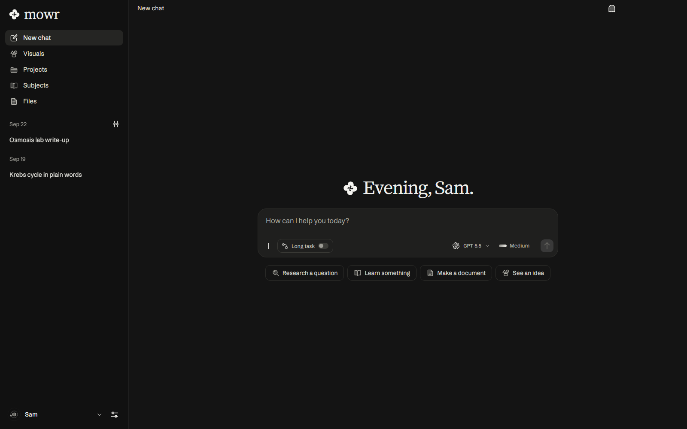
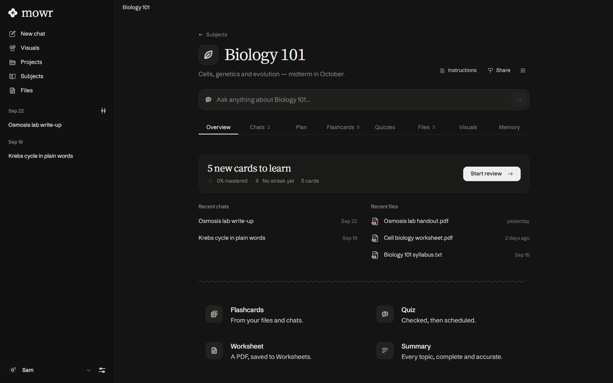
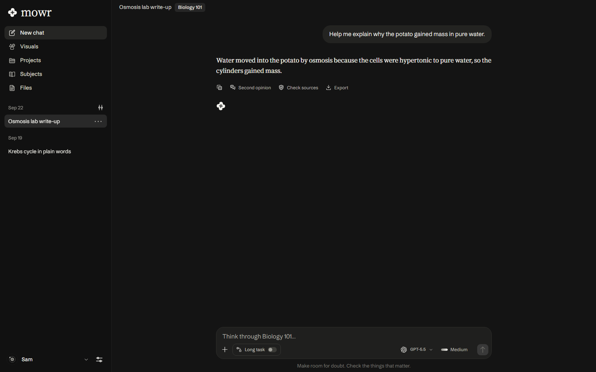

Flashcards from your own notes, paced to your exam.
Why did the potato gain mass in pure water?
Show answerOsmosis. Its cells were hypertonic, so water moved in.
Every claim opens the page it came from.

Typeset PDFs, and Word, PowerPoint and Excel files.
Sam · October 14
Six cylinders were weighed, left in distilled water and in salt solutions of rising strength for 40 minutes, then weighed again.
Mass rose in pure water and fell above 0.3 M, so the cells' own concentration sits near 0.3 M.
Ask for any idea, then play with the answer.
Mowr adds no subscription.
Free for Windows 10 and 11 · mowrai.com